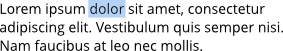
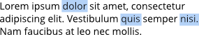
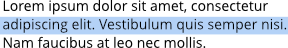
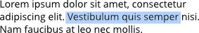
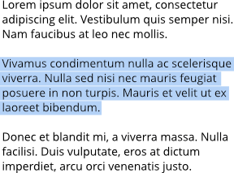
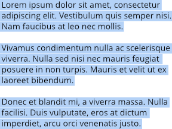

To select text objects for formatting:
To select text objects for formatting:
- With the Move Tool selected, do one of the following:
- Click a text object to make formatting changes to all the text within the text object.
- Double-click a text object to make formatting changes to sections of text within the text object.
- With either of the text tools selected, click a text object to make formatting changes to sections of text within the text object.
To select text on the page:
Do one of the following:
| To select... | Action | Example |
|---|---|---|
| a single word | double-click |  |
| multiple words | double-click with the pressed |  |
| a line | triple-click |  |
| a text range | drag with cursor. Use Shift key to select text between two insertion points. |  |
| a paragraph | quadruple-click |  |
| all paragraphs | quintuple-click |  |
To move text:
- With a single word, paragraph, or portion of text selected, drag and drop it where you would like to place it.
To edit text on the page:
- Do one of the following:
- Select any text tool, then click (or drag) in the text object. A standard insertion point appears at the click position.
- Select a single word, paragraph or portion of text (see above).
- Type to insert new text or overwrite selected text, respectively.